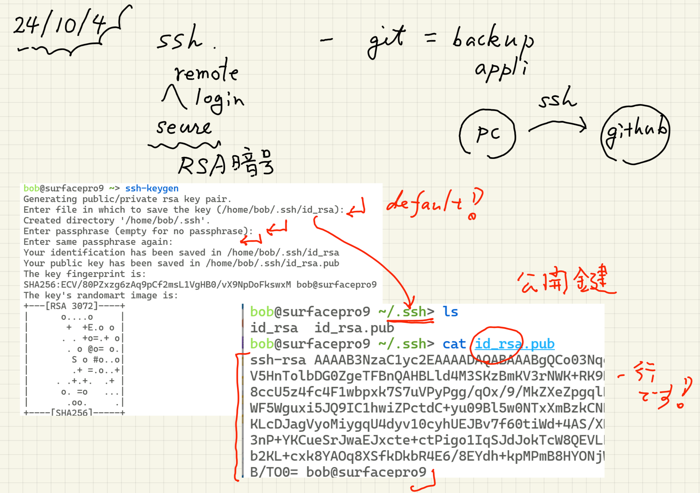
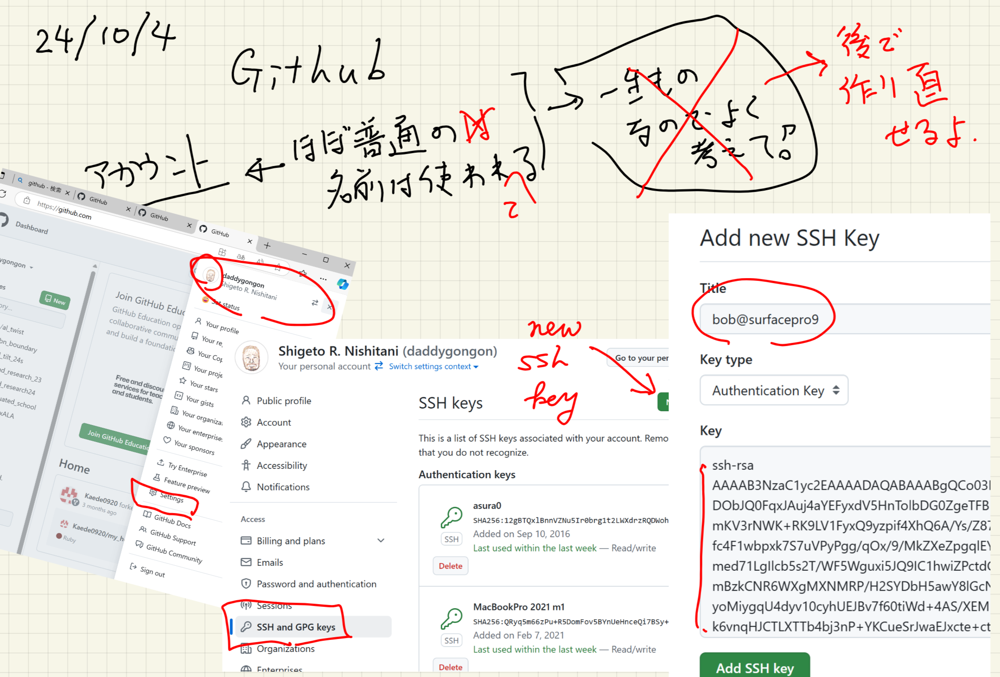
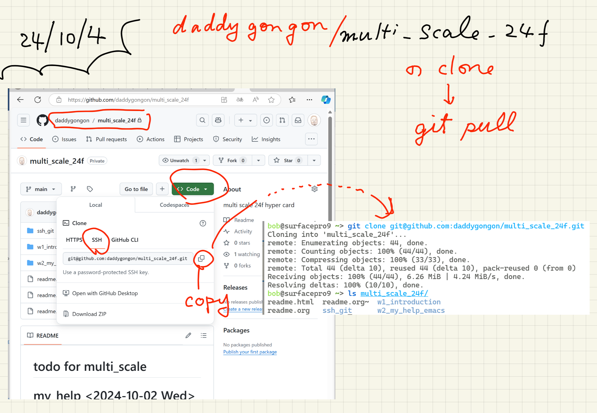

ssh and github
Table of Contents
1. ssh
- already installed
- ssh-keygen
- cat ~/.ssh/id_rsa.pub
|  |
2. github (web appli by rails)
explorer.exe https://github.com- make account
- original account name (後で修正可能)
- need mail address
- accept
- settings -> SSH keys -> new ssh
|  |
3. git clone
git clone git@github.com.daddygongon/multi_scale_24f.git
|  |
4. git push
- git init
- git add .
- git commit -m 'first commit'
で Author identity unknown
- git config –global user.email "hoge@kwansei.ac.jp"
- git config –global user.name "hoge hage"
その後，
- git pull origin main
- git config pull.rebase false
- git config –global core.editor emacs